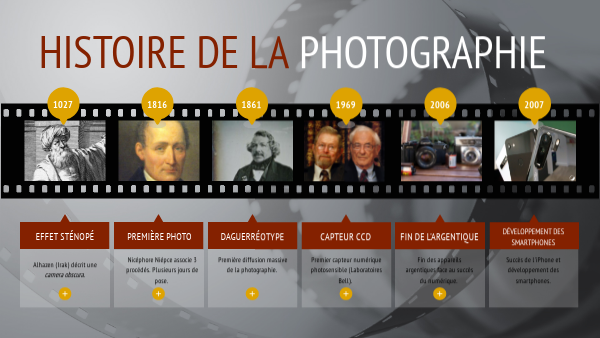

La photographie numérique est née dans les années 1960 avec les premiers capteurs électroniques capables de capturer la lumière et de la convertir en signaux numériques. Cependant, c'est dans les années 1980 et 1990 que cette technologie s'est réellement démocratisée grâce à l'apparition des appareils photo numériques pour le grand public. Ces appareils ont progressivement remplacé les films argentiques en offrant la possibilité de visualiser instantanément les images, de les stocker sur des supports numériques et de les retoucher facilement. Aujourd'hui, la photographie numérique est omniprésente, allant des smartphones aux appareils professionnels, et continue d'évoluer avec des capteurs toujours plus performants et des logiciels de traitement d'image avancés.

| Type | Support |
|---|---|
| Argentique | Pellicule |
| Numérique | Capteur |